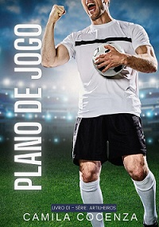
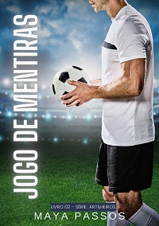
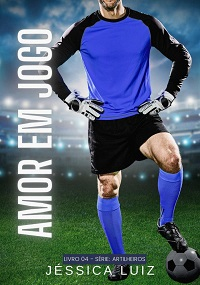
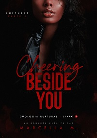
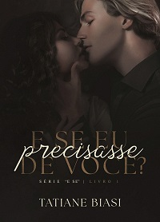
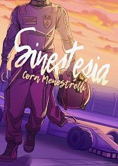
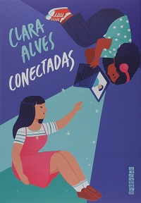

Nesse site você conhecerá alguns livros de autores brasileiros que são muito bons. Abaixo, conheça alguns livros contemporâneos:
Já que atualmente estamos em clima de copa, a série "Artilheiros" conta a história de quatro jogadores e suas jornadas de amor. Para aqueles que amam um clichê, as obras vão te fazer ter grandes momentos de diversão. O primeiro livro, Plano de Jogo, conta a história de Th e Bianca, Th é atacante do Blue Dogs e Bianca é jornalista esportiva. Um acidente de trânsito coloca um no caminho do outro e logo os dois tem que lidar com coincidências e com a presença de um novo sentimento. É interessante que essa série é escrita por quatro autoras diferentes: Camila Cocenza, Maya Passos, Carina Reis e Jéssica Luiz.
|  |  |  | |
Plano de Jogo |
Jogo de Mentiras |
Penalidade Máxima |
Amor em jogo |
Esses romances são "A elite", a química dos casais é absurda, a cada página você tem um surto diferente!
|  |  |
Cheering Beside You |
E Se eu precissasse de você |
O livro conta a história de Raelynn e Ethan, Raelynn é cheerleader, seu time vêm se preparando para a competição nacional, mas um imprevisto acontece, sua treinadora sofre um acidente e agora o time precisa de alguém, é aí que Ethan Roberts surge, conhecido por seu grande talento mas também por sua personalidade difícil, ele agora é o novo treinador da equipe. Os dois guardam um ódio mútuo, mas há de surgir daí uma grande história de amor. O livro retrata diversas situações tristes mas que acontecem diariamenete, como o racismo, alcoolismo e relacionamento abusivo.
Pense em uma história boa e viciante! Alice Rossi acaba de descobrir uma traição e se muda para a casa de sua melhor amiga, ela só não contava com um obstáculo: Marco Montes divide o apartamento com sua amiga. Agora, os dois vâo ter que lidar com uma convivência forçada, ambos vendo o outro como seu eterno arqui-inimigo têm de lidar com o surgimento de sentimentos controversos. O livro é tão divertido, e para aqueles que são grandes nerds, como Alice, as referências a séries, filmes e livros são muito legais.
Esses livros têm meu coração! Ambientação muito legal e casais lindos!
|  |  |
Sinestesia |
Conectadas |
Alexandre Duarte, o garoto de ouro, é piloto profissional e após ser campeão da recente temporada de Fórmula 1, embarca em uma vida profissional agitada, contudo, a chegada de Basile, um engenheiro automobilístico, mexe com sua vida. Em uma jornada de autodescobertas, Basile e Alex constróem uma linda história. Um livro que tem como ambiente a Fórmula 1, íncrivel, né?
Raíssa e Ayla se conhecem jogando virtualmente e desenvolvem sentimentos. O problema é que Raíssa joga com um avatar masculino, e Ayla não sabe que está conversando com uma menina. Raíssa se sente culpada, mas não está preparada para se assumir, e também, quais eram as chances das duas se encontrarem pessoalmente? hmmm, um evento de cosplay chega e agora o encontro acontecerá, será que esse romance online conseguirá sobreviver à vida real?
Uma história muito fofa e emocionante, a relação das duas é muito linda.
Nove jovens da elite carioca se suicidam em um "jogo" de roleta-russa. O corpo dos jovens são encontrados de forma irreconhecível. A polícia questiona o que aconteceu na noite da morte dos jovens, e a investigação ganha novos ares quando um livro de Alex é encontrado, lá ele narra os acontecimentos do dia de sua morte. Essa história é de se arrepiar e o final é SURPREENDENTE, até hoje fico chocada, um livro que merece ser visto! Se você está procurando uma história que vai te deixar com cara de bobo no final e com uma pulga atrás da orelha, leia!